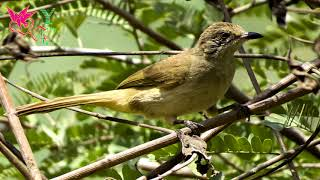

Chú Tư Thiệt chùi hai bàn tay vào hông cùng thằng Út Phệ đi ra nhà trước bỏ mặc nó đứng nhìn mấy chú cu ngói mà lúc nầy đang đậu xuống những thanh tre gát ngang lồng dớn dác nhìn lại nó. Nó đang hiếu kỳ vì lời nói của thằng Út Phệ xin cho nó được đi gác cu với chú Tư, tuy nó chưa biết như thế nào, nhưng nó chắc là hấp dẫn lắm. Dì Út nó chưa vô nhà chú Tư, nhưng nó đã nghe tiếng của Dì:
- Chị Năm em mới về gởi anh chị Tư chút ít ăn lấy thảo, chị Tư chưa vìa hả anh?... và tiếng chú Tư trả lời:
- Ừ, hôm nay bả phải cắt cho xong phần ruộng của ông Tám... chắc cũng sắp rồi... Út cho anh gởi lời cám ơn chị Năm nha... mà chị về chơi lâu mau...?
Họ đã đi vào nhà, và Út nó trả lời chú Tư khi cũng vừa nhìn thấy nó:
- Chắc cũng vài bửa thui... ủa, Bình, con ở đây à... hì hì, Út biết ngay mà... và Út nó quay sang chú Tư Thiệt, đang cất ổ bánh mì và bịch đường cát vào trong chiếc rổ được treo bằng chiếc gióng giữa nhà bếp:
- Nó là thằng Bình con của Năm em đó anh Tư, nghỉ hè về đây chơi, em gởi nó cho anh nghen...
Chú Tư Thiệt cười thật dễ dãi..." được thôi "... trong lúc nó xề tới nắm tay Út nó:
- Chú Tư nói, sẽ cho con đi gác cu đó Út, mà gác mấy con cu đó phải không Út...?
Mọi người nhìn theo ngón tay chỉ của nó vào mấy con cu ngói bị nhốt trong lồng, bật cười lớn, và Út nó chưa biết phải trả lời nó như thế nào thì thằng Út Phệ xen vào:
- Mầy đúng là Bình Trụi mà, lủ quỉ đó công đâu mà gác chứ... và nó hạ thấp giọng:
- Từ từ đừng lo, chuẩn bị cặp giò để lội sẽ biết ngay thui em à... hì hì...
- Lúc rày anh có đi bẩy chim không anh Tư? Út nó hỏi chú Tư.
- Lúa thóc mê man, làm còn không xuể, rảnh đâu mà đi chứ... rồi chú như nhớ ra:
- À mà lúc nảy Út nói chừng nào chị Năm trở về trển... gần tháng nay có bầy Xanh về phá lúa dử lắm, nếu chị Năm chậm chậm chút, anh bẩy tụi nó về đải chị một bửa... vì ngày mốt là anh rảnh rồi...
- A, được a anh Tư, chị Năm em chưa về ngay đâu...
Vừa lúc đó có một thiếu phụ bước qua cầu, nhưng trước khi qua, chị ngồi bệt xuống giữa cầu khoả đôi chân xuống làn nước mát cho sạch bùn.
- A, Thím Tư vìa kìa... thằng Út Phệ lên tiếng.
Thím Tư Thiệt khuôn mặt cũng hiền hoà dễ mến, kéo chiếc nón lá xuống lưng, lột chiếc khăn rằn quấn trên đầu xuống, lau những giọt mồ hôi còn đọng trên mặt, chưa kịp đứng lên thì mọi người trong nhà đã đi ra, Út nó mau mắn:
- Chị Tư, qua nhà em đi, hôm nay có chị Năm em vìa nè...
- A, Út, vậy à... và Thím quay sang chú Tư:
- Anh nấu cơm chưa vậy?
- Xong rồi chờ bà vìa nè.
- Để ảnh ăn một mình đi... Út nó cười và kéo tay Thím Tư... tụi mình đi... Bình nè, con ở đây chơi chiều nhớ về ăn cơm nha...
Út nó còn dặn nó như vậy trước khi cùng Thím Tư bước qua cầu, và Thím Tư cũng quay lại nói với chú Tư:
- Vậy anh ăn cơm trước đi nha...
Nhìn theo họ chú Tư cười:
- Không ăn để đói meo à... bà thiệt tình mà...
Theo chú Tư và thằng Út Phệ trở vào nhà chú Tư, nó thắc mắc:
- Gác cu là sao hở chú Tư?
Đã quá xế trưa, bụng đang sôi nhưng nghe Nó hỏi, chú Tư Thiệt cũng chậm bước lại định nói gì thì...
... Cù cú cuuuuuu... cu cu...
... Cù cú cu uuuuuuuu cu cu...
Trời hiu hiu gió, buổi xế trưa thật im ắng nên tiếng gáy của chú chim cu nào đó cất lên thật cao vút, mênh mông...
Thằng Út Phệ buột miệng:
- A, con Thanh Nhã hôm nay hứng chí gì, mà lại gáy giờ nầy chứ... và nó nói luôn:
- Hay là nó chào ra mắt mầy đó Bình Trụi...
Nó không hiểu thằng Út Phệ muốn nói gì:
- Con Thanh Nhã? chào ra mắt tao, ai là Thanh Nhã chứ?
Thằng Út Phệ cười chỉ tay vào chiếc lồng nhỏ treo bên hông nhà và rỏ ràng tiếng gáy từ trong đó phát ra:
- Con cu đôi đó của chú Tư chiến đấu lắm nha mậy, lâu rồi tao không nghe nó gáy, hôm nay có mặt mầy nó gáy thì không phải chào ra mắt mầy à hì hì...
Chú Tư Thiệt bước nhanh lại đứng dưới chiếc lồng phát ra tiếng gáy của chú chim cu tên Thanh Nhã như lời thằng Út Phệ nói, gật gù có vẽ khoái chí và chú như quên cái bụng đang cồn cào. Nhưng cũng vừa lúc...
... Cù cú cuuuuuuuuu cu cu... Cù cú cuuuuuuuu cu cu....
Một tiếng gáy khác liên tục dồn dập hơn tiếng của con Thanh Nhã cũng chấm dứt với hai tiếng cu cu... và bỗng dưng giữa buổi xế trưa êm ả có hai chú chim cu bốc đồng thi nhau tiếng gáy...
Chú Tư Thiệt cũng như thằng Út Phệ, ngước nhìn về hướng có tiếng gáy của chú chim cu lạ như thầm ước tính nó đang ở đâu.
- Con nầy nghe lạ à chú Tư, trong vùng nầy đâu có con đôi nào ngoài con Thanh Nhã của mình chứ...
- Ừ, tao cũng nghĩ như vậy, chắc nó ở đâu mới đến vùng nầy...
Bỗng con Thanh Nhã trong lồng đập cánh bay lung tung như muốn tìm đến ngay địch thủ làm chiếc lồng chao lắc. Chú Tư Thiệt vói tay lên vịn chiếc lồng cho đứng yên lại cười cười:
- Từ từ, rồi mầy có dịp trổ tài mà, miễn đừng nửa chừng sọc dưa như con Thanh Ngọc nha...
Chú xoay sang thằng Út Phệ:
- Ê, Phệ tao đoán chắc nó đang ở trên Đồng Ông Cộ á, mầy với tụi thằng Rèo để ý coi có phải vậy không, rồi hôm nào mình đi kiếm nó...
thường bầy con đôi đông lắm đó...
- Con biết rồi chú Tư... ê, Trụi, mai tao dẫn mầy lên Đồng Ông Cộ chơi, trên đó có mấy cái đìa, đem cần câu theo cắm có lý lắm đó...
- Đìa của người ta, cắm câu đặng họ cạo đầu mầy ạ, đừng nghe nó nha Bình...
Nó chưa kịp có lời nào thì Út Phệ cười:
- Chú an chí, còn khuya họ mới bắt được con hì hì....
Rồi quay sang nó, Út Phệ tiếp luôn:
- Để chú Tư ăn cơm đi, tao với mầy xuống đầu kinh tắm một phát, ông già tao đã làm cây cầu tắm chiến đấu lắm không bị bùn như năm rồi đâu, hỏng chừng tụi thằng Rèo đã ở đó rồi... tụi con dông nha chú Tư...
Chưa kịp nghe chú Tư Thiệt trả lời, thằng Phệ nắm tay nó kéo đi, nhưng vừa qua cây cầu cau nó đã ngần ngừ:
- Mầy nói thiệt không còn bùn chứ, lần chót ham tắm nước ròng không hay, mép thằng nào cũng bị đóng bùn về nhà không nứt đít là may, bà già tao hăm còn dọc bùn nữa là bả không cho tao về luôn...
- Mầy chậm tiêu quá đi, bi giờ người ta đã đào con kinh đó sâu lắm, mầy lo hụt chưn uống nước đục thì có, chớ bùn gì... đi lẹ lên... ê, mà nè Trụi, lần nầy nếu có chọi đất, tao với mầy 1 phe nha, chọi cho tụi nó lé luôn...
Trời trưa nóng nực, được nô đùa dưới làn nước trong mát thì còn gì hơn, nên nó bén gót chạy theo thằng Út Phệ mà bên tai nó vẫn còn đâu đây tiếng cười chế nhạo của lũ bạn khi có lần nó vì lo ngó con nhỏ Thảo Quăn đang bước qua cầu nên lảnh một cục bùn của thằng Hưng Rèo vào vai đau điếng...
ùùù
Nó lau bụi thật kỷ chiếc ná của mình, kiểm tra thấy hai sợi thun vẫn còn tốt, nên lui cui tìm những hạt sỏi xung quanh nhà bỏ vào chiếc túi nhỏ đeo trên cổ chuẩn bị cho chuyến đi Đồng Ông Cộ trong khi chờ thằng Út Phệ. Ông Bà Ngọai nó đã ra đồng từ sáng sớm, má và Dì Út nó đang giặt đồ bên cầu ao, vừa nhác thấy bóng thằng Út Phệ, nó nói to cố ý cho má nó nghe:
- Ê, đi đồng Ông Cộ hả mậy, chờ tao với... và nó phóng theo chân thằng Út Phệ, không kịp trả lời câu..." thằng quỉ, mầy đi lên đó làm gì... mau về nha..." của má nó...Sương mỏng vẫn còn la đà trên các cánh đồng dầu nắng ban mai đã ửng hồng sau lủy tre xanh chạy dài hút mắt. Ngọn gió ban mai lành lạnh, vờn trong bầu không khí thanh khiết hiền hòa như những người nông dân chân lấm tay bùn trên quê hương nó. Vọng đâu đó xa xa có những tiếng cười thật trong trẻo hòa trong tiếng đập lúa rì rào... Đi trước nó, thằng Út Phệ cầm trên tay hai cây cần câu cắm, mang bên hông cái tàu cau hình như mới rụng cột thắt hai đầu thêm cái bi-đông bằng nhựa đựng nước và nó chắc chắn thằng quỉ nầy cũng không quên chiếc ná cao su cùng túi đạn đất sét.
Hai đứa băng qua vài ba cánh đồng lúa đã gặt xong, nền ruộng, đất vừa khô chờ mưa xuống. Nó chợt dừng lại nghe ngóng rồi lom khom men theo bờ ruộng bọc qua rặng trăm bầu... Thằng Út Phệ đứng chống nạnh nhìn nó giương ná nhắm lên lùm cây... "Rẹtttt"... có vài chiếc lá xa cành chao trong gió sớm cùng hai chú chim chìa-vôi hốt hoảng bay vút lên cao trong lúc thằng Út Phệ cười ha hả:
- Xí hụt hihihiiiii, mầy coi có cục c... nào tụi nó ị lại thưởng mầy không...?
Nó không giận thằng Út Phệ chút nào:
- Ừ, thì mầy giỏi, tao cũng chống con mắt lên coi nó ị cho thằng nào cục bự hơn...
Út Phệ làm tài lanh:
- Tụi chìa vôi nầy tanh rình, lát nữa qua cánh đồng lúa chưa gặt kìa, kiếm tụi chim sắt, áo dà... con nào cũng ú nú, tha hồ cho mầy trổ tài thiện xạ...
- Ú cở mầy là cùng chớ gì...? Nó không bỏ qua cơ hội trêu lại thằng Út Phệ... nhưng thằng Phệ đã bỉu môi:
- Ú cở tao thì nói gì nữa... thằng khỉ, dọt nhanh chút đi, qua ngang khu ruộng Cánh Bườm nếu thấy được con nhái nào, mầy tóm nó cho tao, tao sẽ đải mầy cá nướng trui hihiihi...
- Xì, mầy làm như cá sẳn trong túi mầy vậy...
- Hi hi bởi vậy mới nói, con Thảo Quăn kiu mầy Trụi quả không sai, theo anh học nghề đi cưng... hy vọng mình đến Đồng Ông Cộ gặp được nó đi ăn về, nếu thật sự nó chiếm cứ khu vực đó...
Nó chạy theo thằng Út Phệ mà trong lòng mù tịt với những gì thằng Phệ vừa nói và nghĩ sẽ phải hỏi thằng Phệ cho đở ấm ức. Đồng Ông Cộ hiện ra trước mắt nó là một khu đất - đúng ra là khu mồ mã - khá rộng nằm nổi lên trên cánh đồng lúa bạt ngàn, được bao quanh bởi những thứ cây mọc hoang không biết từ bao đời như me, me-keo, đủng-đỉnh, trăm, trăm-bầu... mà cao và to nhứt là mù u, có cây nhìn lên thấy được ngọn thiếu điều trẹo cổ... Có lẽ trước đây những cây nầy cung cấp củi chụm cho chủ nhân của khu đất, nhưng chắc đã lâu lắm người ta không khai thác nên họ nhà cây đã chằng chịt cung cấp bóng mát cho người đã yên nghỉ dưới những ngôi mộ đá ong loang lổ vết đạn chiến tranh và lũ cá dưới mấy chíếc đìa, bởi do vị trí thấp nên hầu hết nước trên các cánh đồng mùa khô đã đổ xuống đây, dẫn đường cho lũ cá xuống trú dưới đìa chờ người đến tát bắt trước khi trời đổ mưa, và cũng là nơi cư trú lý tưởng cho hầu hết các loại chim rừng. Rải rác chung quanh Đồng Ông Cộ vẫn còn một vài đám ruộng chưa gặt nên người ta phải đặt rất nhiều con bù-nhìn bằng rơm để xua đuổi lũ chim đến phá...
Nắng đã lên, xa xa trước mắt nó, hình ảnh cắt, đập, gánh rơm, cộ lúa... của người nông dân quê hương nó thật yên bình... và nó nghĩ chắc Ngọai nó cũng có mặt trong đó, nhưng tiếng thằng Út Phệ đã kéo nó về thực tại:
- Ê, đưa con nhái cho tao...
Chỉ chờ có bấy nhiêu, nó đưa ngay con nhái đang nắm trong tay cho thằng Út Phệ. Con nhái quỉ nầy nó lỡ bắt nên phải nắm trong tay khi băng ngang khu ruộng Cánh Buồm, quăng đi thì sợ không đủ mồi cắm câu, vì vậy mà nó không sao xử dụng được chiếc ná của nó trước một vài con cu Ngói thật dạn dĩ tìm mồi...
Thằng Út Phệ cũng bắt được 1 con nhái, nhưng nó có chuẩn bị sẳn mấy sợi dây cước dắt bên hông nên thắt vòng cột ngang eo con nhái gọn bân, đâu phải nắm mỏi tay như nó. Giúp nó cột con nhái cũng được, nhưng muốn trêu nó nên thằng Phệ phớt lờ, đến khi móc mồi mới kêu nó đưa... Biết được ấm ức của nó, thằng Út Phệ vừa móc con nhái vào lưỡi câu cắm, vừa cười:
- Mầy không nghe tiếng trao-trảo sao, cây trăm trong đó tao biết hôm nay chín bộn rồi... trái bự mà hột nhỏ híu hà... đã lắm... nên tụi trao-trảo đóng đô ở đây... tha hồ cho mầy bắn... đứng đây, chờ tao đi cắm hai cây cần câu nầy, rồi mình vào trong đó kiếm tụi nó với con đôi luôn...
Không chờ nghe nó trả lời, thằng Út Phệ nhảy phóc qua gò đất um sùm gốc trăm bầu, lẫn nhanh về phía đầu sòng của chiếc đìa lớn nhứt... Nó xoa tay khoan khoái nhìn vào những lùm cây bùm sùm trước mặt, tháo chiếc ná thun đang mang trên cổ xuống giương giương lấy trớn trong khi chờ thằng Út Phệ, thì bất chợt:
- Ê, nhỏ... làm gì đứng ở đây vậy mậy...?
* trao-trảo là loài chim có lông xám, lớn cở chim sáo, nhưng lông đuôi dài hơn, chuyên ăn trái cây chín.(xem hình)

Chim Trao-Trảo